Visual Studio Image Library: 16 Color Actions
Use Restrictions
Action icons are used to represent commands in the menu structure. These are most often action verbs,
but sometimes are nouns (objects or tools) with actions associated with them,
such as Hide or Show. As
part of a visual language, the images in this folder (or any part of the images) should be
used consistent with, although not necessarily identical to, the usage described
below:
| Image | Filename | Display when showing: |
|---|---|---|
| 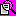 | ActualSize.bmp | View a page actual size |
| 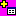 | AddTable.bmp | Add a data table |
| 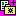 | AddToFavorites.bmp | Add element to Favorites |
| 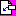 | AddToPage.bmp | Add an element to the current page |
| AlignTableCellTopCenter.bmp | Align contents of cell to top center | |
| AlignTableCellTopLeftJust.bmp | Align contents of cell to top left | |
| AlignTableCellTopRight.bmp | Align contents of cell to top right | |
| 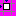 | AlignToGrid.bmp | Align element to the grid |
| ArrangeSideBySide.bmp | Arrange the selected pages side by side | |
| ArrangeWindows.bmp | Arrange windows horizontally | |
| BackgroundSound.bmp | Add or browse to a background sound file | |
| BarCode.bmp | Any usage for a bar code | |
| BehindText.bmp | Place object behind text | |
| Book_angle.bmp | Documentation | |
| Book_open.bmp | Documentation (open) | |
| Breakpoint.bmp | Breakpoint | |
| 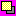 | BringForward.bmp | Bring current element up one layer |
| 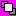 | BringToFront.bmp | Bring current element in front of all other elements |
| BrokenLink.bmp | Indicate a broken link | |
| Bullets.bmp | Add bullets to current selection | |
| 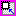 | CanvasScale.bmp | Scale the visible document canvas |
| CascadeWindows.bmp | Cascade the open document windows | |
| CenterAcross.bmp | Center contents across container | |
| Checkbox.bmp | Checkbox (checked) | |
| CheckGrammar.bmp | Check grammar of selection or file | |
| 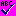 | CheckSpelling.bmp | Check spelling of selection or file |
| Color.bmp | Display UI to allow for color choices | |
| Color_fillLS.bmp | Choose a color to fill the selected area | |
| Conflict.bmp | Indicate a conflict or to launch conflict resolution UI | |
| Copy.bmp | Make a copy | |
| Cut.bmp | Cut to clipboard | |
| Dial.bmp | Connect via phone line | |
| DisplayInPureBlackAndWhite.bmp | Display without color | |
| Document.bmp | Launch a new document | |
| DownloadDocument.bmp | Download a document | |
| Edit_Redo.bmp | Redo an action | |
| Edit_Undo.bmp | Undo an action | |
| EditBrightContrast.bmp | Change contrast | |
| EditInformation.bmp | Edit information | |
| 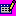 | EditTable.bmp | Edit table contents |
| EmailContact.bmp | Object: email contact | |
| EmailPreview.bmp | Preview email | |
| eps_closed.bmp | Indicate unopened correspondence | |
| eps_open.bmp | Indicate correspondence that has been previously viewed | |
| eps_open_large.bmp | Indicate correspondence that has been previously viewed | |
| 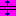 | ExpandSpace.bmp | Increase space between elements |
| Fax.bmp | Fax | |
| 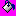 | FillColor.bmp | Change background color |
| FillDown.bmp | Copy contents to fill area vertically down | |
| 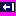 | FillLeft.bmp | Copy contents to fill area horizontally left |
| FillRight.bmp | Copy contents to fill area horizontally right | |
| Filter2.bmp | Indicate that a view is filtered or launch UI to allow for filtering | |
| 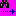 | FindNext.bmp | Find the next element |
| Flag_blue.bmp | Mark element or file (may be importance or simple grouping) | |
| Flag_green.bmp | Mark element or file (may be importance or simple grouping) | |
| Flag_red.bmp | Mark element or file (may be importance or simple grouping) | |
| FlipHorizontal.bmp | Flip elements horizontally | |
| FlipVertical.bmp | Flip elements vertically | |
| FontDialog.bmp | Launch a dialog for making font choices | |
| FormRun.bmp | Run the current project, form or application | |
| FormulaEvaluator.bmp | Evaluate formula | |
| 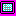 | FullScreen.bmp | Go into a visual mode which maximizes real estate for viewing or editing |
| Function.bmp | Function | |
| GoToFirstRecord.bmp | Display the first record in the set | |
| GoToLastRecord.bmp | Display the last record in the set | |
| GoToParentFolder.bmp | Move up one folder in the directory hierarchy | |
| GoToPreviousMessage.bmp | Display previous message | |
| GoToPreviousRecord.bmp | Display previous record | |
| GoToShortcuts.bmp | Indicate a shortcut | |
| Graph.bmp | Display a graph | |
| Highlight.bmp | Mark elements or words with highlight | |
| Home.bmp | Home (web) | |
| HtmlBalanceBraces.bmp | Balance HTML braces | |
| HTMLPassword.bmp | Password control | |
| HTMLSubmit.bmp | Submit form | |
| Hyperlink.bmp | Add, modify or view hyperlink details | |
| 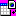 | ImportXML.bmp | Import XML contents |
| InsertPage.bmp | Insert a page | |
| InsertPhotos.bmp | Insert or display photos | |
| InsertTabControl.bmp | Indicate a tab control or the action of adding a tab control | |
| Legend.bmp | Display a legend | |
| LineStyle.bmp | Show line style options | |
| MonthlyView.bmp | Display a monthly view | |
| 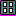 | MultiplePages.bmp | Show multiple pages at a time, or allow for multiple page layout |
| MultiSelect.bmp | Select multiple items | |
| 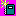 | NewReport.bmp | Create a new report |
| NewWindow.bmp | Launch contents of current window into a new window | |
| NextPage.bmp | Display or move to new page | |
| OpenFolder.bmp | Launch a dialog to allow for browsing to folders | |
| OpenSelectedItem.bmp | Open the selected item | |
| 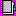 | Organizer.bmp | Launch an organizer or indicate that the current selection will be organized in some way |
| PageDown.bmp | Move page down | |
| PageNumber.bmp | Display page number, or add a page number to the document | |
| 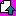 | PageUp.bmp | Move page up |
| PageWidth.bmp | Set page width or allow contents to spread across entire width | |
| Paste.bmp | Paste from clipboard | |
| Pause.bmp | VCR control: Pause (general) | |
| PauseRecorder.bmp | VCR control: Pause recording | |
| PieChart.bmp | Chart: piechart | |
| 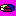 | PieChart3D.bmp | Chart: 3D chart |
| Play.bmp | VCR control: Play | |
| Pointer.bmp | Generic mouse pointer (any context) | |
| Portrait.bmp | Document contents displayed in vertical format | |
| PortraitLandscape.bmp | Change document orientation from horizontal to vertical | |
| Preview.bmp | Preview | |
| PreviousPage.bmp | Display previous page | |
| PrimaryKey.bmp | Data: indicate the primary key | |
| Print.bmp | Send document or element to printer | |
| PrintListRange.bmp | Send specified range to printer | |
| PrintPreview.bmp | Launch UI to allow for previewing printer results | |
| PrintSetup.bmp | Launch UI to allow for margin and other document details to be specified | |
| ProtectForm.bmp | Lock form from changes | |
| ProtectSubdocument.bmp | Lock subdocument from changes | |
| PublishPlan.bmp | Allow document to be publicly viewable | |
| PublishToWeb.bmp | Allow document to be viewable on the web | |
| Pushpin.bmp | Indicate that element can be persisted in view | |
| PushpinNormal.bmp | Indicate that element can be persisted in view | |
| PushpinPushed.bmp | Indicate that element has been pinned into view | |
| QuickInfo.bmp | Show small snippet of information | |
| QuickReport.bmp | Generate a report | |
| RecolorPicture.bmp | Edit colors in picture | |
| Record.bmp | VCR control: Record | |
| 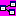 | Relationships.bmp | Show relationships between tables or elements |
| RenameFolder.bmp | Rename folder | |
| Repeat.bmp | Repeat last action | |
| ReplyAll.bmp | Reply to everyone on the current thread | |
| 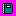 | ReportDefault.bmp | Display a report or format contents into a report format |
| ResetPicture.bmp | Return image details to original values | |
| ResetSideBySide.bmp | Align documents or windows side by side horizontally | |
| Resize.bmp | Change the size details of the image | |
| Restart.bmp | Restart | |
| RestrictedPermission_document.bmp | Restrict viewing or editing permissions on the current document or file | |
| RightArrow.bmp | Arrow - any usage | |
| RightArrow2.bmp | Arrow - any usage | |
| RightToLeftDoucment.bmp | Display contents right-to-left | |
| RoutingSlip.bmp | Attach routing information or other details to current document | |
| Save.bmp | Save changes in current element or file | |
| 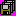 | SaveAll.bmp | Save changes in all open files |
| 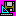 | SaveFormDesign.bmp | Save design details |
| Send.bmp | Attach element to email correspondence | |
| 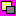 | SendBackward.bmp | Send selected object back behind the next element |
| 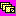 | ShowAllComments.bmp | Show all comments related to the current selection |
| ShowGridlines.bmp | Display non-visible gridlines | |
| ShowNavigationPane.bmp | Display a hierarchy pane which aids navigation in the document | |
| ShowNextStatement | Display the next statement | |
| ShowRuler.bmp | Display ruler | |
| 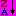 | SortDown.bmp | Display contents in reverse alphabetical sorted order |
| SortUp.bmp | Display contents in alphabetical sorted order | |
| SpeechMic.bmp | Enable microphone or speech capabilities | |
| SplitSubdocument.bmp | Split document into subdocuments | |
| Stop.bmp | Stop the current process | |
| Subscript.bmp | Make current selection subscript to adjacent text | |
| Superscript.bmp | Make current selection superscript to adjacent text | |
| 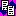 | SychronizeList.bmp | Synchronize two lists |
| Symbol.bmp | Generic symbol - any usage | |
| Table.bmp | Indicate structured contents: either a document/html table or data table | |
| 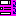 | TabOrder.bmp | Indicate the order in which the keyboard will access the elements |
| Textbox.bmp | A container for text | |
| 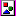 | ThumbnailLoading.bmp | Generic image symbol - use as image placeholder, any situation |
| 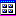 | ThumbnailView.bmp | Show a display which contains multiple images or documents |
| ToggleMessageHeader.bmp | Display document/message/file header details on/off | |
| ToolboxNavControl.bmp | Show navigation control | |
| 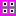 | ViewThumbnails.bmp | Show multiple images or documents |
| Warning.bmp | Display a non-critical but important warning to the user | |
| WeeklyView.bmp | Display schedule in a weekly format | |
| XMLFile.bmp | Object: XML file | |
| Zoom.bmp | Generic zoom: launch dialog or cascade to allow for choosing zoom aspect | |
| ZoomIn.bmp | Zoom in control: non-specified aspect | |
| ZoomOut.bmp | Zoom out control: non-specified aspect |